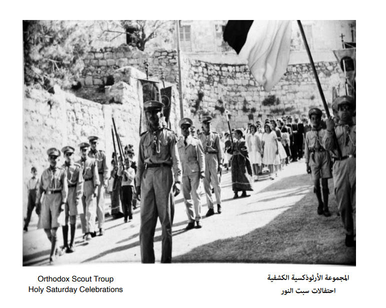

الصفحة الرئيسة
جمعيه الاحسان الأرثوذكسية العربية هي أولى الجمعيات الخيرية التي أنشأت في فلسطين فكان الترخيص الأول لها زمن الانتداب العثماني عام 1907. وكانت خدماتها تقتصر آنذاك على تقديم مساعدات عينيه وبعض المساعدات المالية القليلة لمن هو محتاج ولعدد محدود اذ في ذلك الحين....


الهيكل التنظيمي ورؤية جمعية الإحسان الأرثوذكسية العربية
فقرة
الهيئة الإدارية والطاقم الاداري
يتم انتخاب الهيئة الإدارية لجمعيه الاحسان كل ثلاث سنوات وهي منبثقه عن الهيئة العامة. يبلغ عدد أعضاء الهيئة الإدارية 11 عضوا وفق الإجراءات القانونية الرسمية الموضحة في النظام الأساسي للجمعية. وبانتخاب هؤلاء الأعضاء تكون الهيئة العامة قد وضعت ثقتها بقدراتهم وكفاءاتهم لحمل المسؤولية وادارتها.
المزيدرؤية الجمعية
السعي المستمر والمستدام الى الريادة والتميز في العمل الخيري لتحقيق المنفعة والتنمية الاجتماعية لأبناء مدينه بيت جالا بكافة مكوناتهم.
الخطة الاستراتيجية
اطلقت جمعية الاحسان الأرثوذكسية العربية خطتها الاستراتيجية للعام 2021 – 2025 وذلك في حفل اقيم في مقر الجمعية بتاريخ 22/4/2021 حضره ممثلون عن مؤسسات ومراكز وجمعيات مختلفة في المنطقة، اضافة الى المشاركين في حلقات النقاش.
Read moreالهيئة الإدارية للجمعية والطاقم الاداري
يتم انتخاب الهيئة الإدارية لجمعيه الاحسان كل ثلاث سنوات وهي منبثقه عن الهيئة العامة. يبلغ عدد أعضاء الهيئة الإدارية 11 عضوا وفق الإجراءات القانونية الرسمية الموضحة في النظام الأساسي للجمعية.
Read moreرسالة الجمعية
العمل على تحسين نوعية الافراد من خلال ايجاد برامج ومشاريع مختلفة تتمثل في توفير وتقديم المساعدات الانسانية والبرامج التدريبية والتثقيفية والاجتماعية والاهتمام والرعاية للمبادرات الشبابية، لبناء القدرات للفئات التي تستهدفها الجمعية معتمدة على فهم عميق لحاجات المجتمع بوجود فريق من الهيئة الادارية المتطوعين فيها من ذوي الكفاءة والمعرفة للقيام بذلك، بالشراكة مع كافة الجهات المعنية في المجتمع المحلي والمؤسسات التي تشاركنا نفس الاهداف والغايات.
العقارات
عقارات جمعية الاحسان
اذ يتطلب ذلك المتابعة الحثيثة في الحصول على موافقه الطرف الإسرائيلي لتسجيلها ناهيك عن التكلفة المالية التي يمكن ان تتكبدها جمعيه الاحسان لتسجيل تلك العقارات. كما يجدر الإشارة ان هنالك من العقارات ما هو مسجل باسم جمعيه الاحسان ولكن تدار إداريا وماليا وبشكل كامل من قبل وكلاء الكنيسة الأرثوذكسية في بيت جالا.
تمتلك جمعيه الاحسان عقارات مختلفة في مدينه بيت جالا وهذه العقارات ما هو مسجل بالكامل باسمها بوثائق رسميه ومنها ما هو مسجل بشكل جزئي حيث تقوم اداره الجمعية ومنذ فتره وبشكل مستمر ومثابر بتسجيل هذه الأملاك باسم الجمعية والعمل جار على تسجيلها. هنالك أيضا من العقارات ما يقع في وسط المدينة ومنها ما يقع خارجها في منطقه (ج) الواقعة تحت السيطرة الإسرائيلية والتي تجد الجمعية صعوبة في تسجيلها
الاعضاء
فقرة صغيرة

السيد عماد نيقولا صليبا نور
رئيس الجمعية

السيد ماجد رزق وهبه أبو قبع
نائب رئيس الجمعية

السيد رأفت سامي وديع اليتيم
امين الصندوق

السيد يعقوب جريس يعقوب القصاصفه
امين السر

السيد يوسف خضر وديع زيت
عضو

الدكتور وليد عادل نيقولا زرينه
عضو

السيد مايك يعقوب سابا أبو عباره
عضو

الاب الياس عيسى باسيل زعرب
عضو

السيد جورج الياس اديب خوري
عضو

السيد سليم خليل سليم زيدان.
عضو

السيد صليبا نعيم جمعه أبو عوض
عضو
فروع جمعية الاحسان

تبرع للجمعية
تتوجه اليكم جمعية الاحسان الأرثوذكسية العربية -بيت جالا، وأنتم يا أصحاب الايادي البيضاء بطلب دعم ومساعدة الجمعية للحفاظ على ما تقدمه من خدمات انسانيه واجتماعية للعائلات والافراد الذين يواجهون صعوبات في حياتهم اليومية. نتوجه الى أبناء مدينتنا المغتربين ونذكركم دائما ان هنالك أبناء واخوة لكم في المدينة يواجهون صعوبات كبيرة لتأمين ما يحتاجه أي انسان عادي بسيط من دواء وعلاج وما يسد رمق العيش في هذه الأيام الصعبة التي لا تخفى عليكم حفاظا على سلامتهم وانسانيتهم للعيش بكرامة وامان واحترام. لنمسك ايادينا بعضنا بعضا لنقدم ما نستطيع من دعم ومساعدة لأبناء مدينتنا ولنتشارك في مسؤوليتنا الاجتماعية لمساعدتهم مع كل شكنا وتقديرنا لكم
تبرعالطاقم الاداري
يقوم بتنفيذ الاعمال اليومية وتفعيل نشاطها بموجب الأنظمة والإجراءات الإدارية والمالية الموثقة والمعتمدة بشكل رسمي من مجلس اداره الجمعية. كما يقوم الطاقم الإداري والمالي بتنفيذ ما يتخذه مجلس اداره الجمعية من قرارات ومتابعتها اول بأول.
السيد عماد وديع أبو مهر
المدير التنفيذي للجمعية
الأنسة مرام عصام أبو رمان
السكرتيرة الادارية
السيد إيليا عيسى قيسيه
محاسبالسيدة رحمه ميخائيل عمر
عاملة صحية
>
جمعية الإحسان الأرثوذكسية العربية: دعم المجتمع في الأوقات الصعبة
كان أغلب أهالي مدينة بيت جالا في وضع مادي واقتصادي صعب للغاية في الوقت التي شهدت هذه الفترة وما بعدها بعدة سنين موجة من الهجرة إلى عدة أماكن حول العالم سعياً وراء رزقهم لدعم عوائلهم المتبقين منهم في بيت جالا. كان يشرف على الجمعية آنذاك رجال يشهد لهم بالسمعة الحسنة من أبناء بيت جالا يقومون مجتمعين بزيارة ذوي الحاجة مباشرة ويقدمون لهم المساعدة قدر المستطاع ضمن ما يتوفر من إمكانيات. هذه المساعدات كانت تتأتى في الأغلب من ريع وغلات الأرض وتقديمها للمحتاجين ومن ذوي العوز. جمعية الإحسان الأرثوذكسية العربية هي من الجمعيات الرسمية العريقة الفاعلة في العمل الخيري في فلسطين. وهي جمعية أهلية غير حكومية هدفها الأساسي تخفيف العبء بتقديم المساعدة لذوي الحالات الاجتماعية. تساهم بقدر كبير بالمشاركة مع مؤسسات ومراكز أهلية وطنية محلية أخرى فاعلة في تطوير وحماية ورعاية الإنسان والحفاظ على كرامته وحقوقه وإنسانيته. فهنالك من البرامج والمشاريع تتعاون بها جمعية الإحسان مع هذه المؤسسات والمراكز في مجال رعاية المسنين ودعم الفقير وتغطية مصاريف طبية وعلاجية والتعليم والرياضة والتدريب والفنون والمسرح والثقافة والاهتمام بالأطفال وتنمية مواهبهم إضافة إلى مشاريع متواضعة للإسكان. جمعية الإحسان الأرثوذكسية العربية تحاول جاهدة وبشكل مثابر ودائم لتقديم خدماتها الإنسانية. واعتمدت في تقديم خدماتها الإنسانية على معايير وأنظمة موثقة ومعتمدة إدارياً بشكل رسمي وبشفافية مطلقة دون تمييز. إلا أن هذا العام والعام الذي سبقه كانا استثنائيين وعبأ كبيراً على الجمعية في تقديم خدماتها في ظل جائحة كورونا التي أثرت بشكل سلبي وكبير على أغلب شرائح مجتمعنا ليس المجتمع المحلي فقط وإنما على كافة المجتمعات المحلية والدولية وعلى كافة المستويات. إن هذا الأمر حد من تقديم وتلبية الحاجة لشرائح محتاجة كثيرة من المراجعين للجمعية كالمعتاد في الوقت الذي شهدت فيه الجمعية تراجعاً في دخلها المالي بشكل ملحوظ وزيادة في التزاماتها. وبالرغم من ذلك ساعدت الجمعية العديد من العائلات والأفراد المحتاجين بالقدر القليل وبما يتوفر لديها من موارد متواضعة جداً في ظل ظروف صعبة للغاية لا تخفى على أحد.